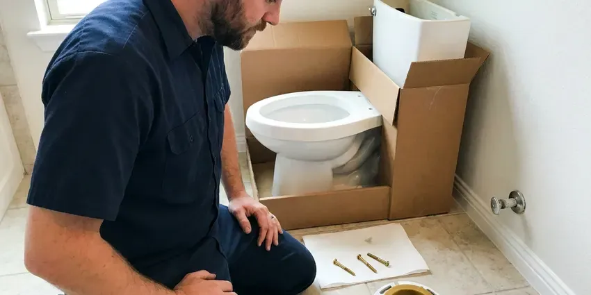
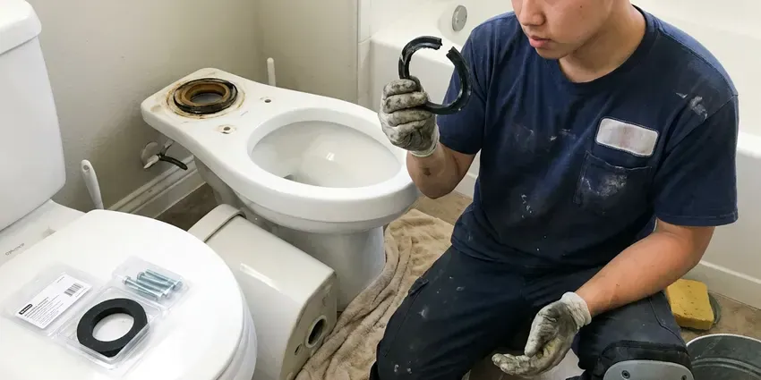

Toilet Repair in Keene, NH
A running toilet can use more water than the rest of the house. We fix them in Keene, NH, most in under an hour.
- Leak-Tested Before We Leave
- Flappers and Seals On Hand
- Guaranteed Repairs
- Parts on the Truck

Get Your Toilet Repaired Today in Keene, NH
Leaking or clogged, we fix it and flush-test it before we go.
Toilet Repair in Keene, NH
FVR Plumbing works on gravity-fed toilets, pressure-assist units and dual-flush models in homes and rentals around Keene. Mineral scale builds up in the rim jets and the siphon hole, so we clean those as part of a weak-flush repair. Sometimes the porcelain is the problem. When that happens, you hear it from us before you pay for parts that will not help.
Our expertise includes:
- Descale rim jets and the siphon jet
- Replace failed flappers and fill valves
- Closet flange repair rings for base leaks

Additional Bathroom Plumbing Services in Keene, NH
From toilets to showers, our bathroom plumbing team in Keene, NH handles repairs, installs, and upgrades with tidy, code-compliant work.


Professional toilet installation, Keene

Professional toilet bowl replacement, Keene


Customers
Why Choose FVR Plumbing for Toilet Repair in Keene, NH?
Our plumbers work on Kohler canister valves, American Standard Champion 4 inch flappers, TOTO 3 inch seals and Mansfield valves, which do not take generic flappers. The right part fits the first time. A one-size flapper on those tanks tends to leak again within a few weeks.
- Matched Parts, Brand-specific flappers seal properly where universal ones leak.
- Fast Response, Active leaks go to the front of the schedule.
- Upfront Pricing, You get a written price before any work begins.
Citywide Coverage
Rental owners and property managers around Keene use us for toilet calls at tenant-occupied units, and we coordinate entry directly with the tenant. The owner gets the invoice plus photos of the failed part and the repair. Lockbox codes and keys stay with the job ticket.
Experienced Team
The FVR Plumbing crew is licensed and background-checked, and they wear shoe covers and lay down a drop cloth before the toilet comes off the floor. They clean up after. The failed parts go in a bag so you can see them before we haul them away.
Safety-First Approach
Rotted subflooring is something we show you before going further, since setting a toilet on soft plywood guarantees the seal will fail again. The choice of what to do is yours. A small subfloor patch around the flange is often enough before the toilet goes back down.
Trusted Certified Keene Plumbing Services Professionals
At FVR Plumbing, we are proud to offer certified plumbing services throughout Keene, NH. Credentials matter in this trade. Our plumbers hold recognized industry credentials, and they follow strict safety and quality rules on every repair, installation and maintenance call we run.
Call Us Now PHCC Plumbing Contractor Recognition
PHCC Plumbing Contractor Recognition Better Business Bureau (BBB) Accreditation
Better Business Bureau (BBB) Accreditation Angi Certified Pro
Angi Certified Pro ISO 9001 Quality Management Certification
ISO 9001 Quality Management CertificationWhat We Fix on Toilets in Keene, NH
Leaking Toilet Base Repair in Keene, NH
A rocking bowl breaks the wax seal a little more every time someone sits down, and eventually the leak shows up as a stain or a soft spot. With a slab floor, the flange is often anchored into concrete and can crack if the closet bolts are overtightened. We check it. A cracked flange gets a stainless repair ring or a new flange before the toilet goes back down.

Flush Mechanism Repair in Keene, NH
A weak flush usually means the tank is not filling to the fill line, the chain has too much slack, or the flapper is closing before the tank empties. We bring the water up to the line stamped on the overflow tube and adjust the chain to about half an inch of slack. Handles break too. A cracked handle arm or a stripped mounting nut takes about five minutes to replace.
Fill Valve Replacement in Keene
Old ballcock valves with a brass arm and a big plastic float are loud and slow to refill, and they tend to stick open when scale builds up in the ports. We replace them with an adjustable modern fill valve from Fluidmaster or Korky and set the height so the critical level mark sits at least an inch above the overflow. It is a twenty-minute job. The tank gets noticeably quieter.
Wall-Hung Toilet Repair in Keene
Restaurant restrooms get the hardest use we see, and wall-hung bowls there can loosen on their carriers until the seal leaks behind the wall. We tighten or rebuild the carrier and reseal the bowl. That one needs care. A loose wall-hung bowl can crack the china if it is ignored.
Toilet Flush Repair in Keene, NH
Two or three tries to get a full flush points to a flapper closing too early, a chain hooked in the wrong hole, scale in the rim jets, or a cracked overflow tube letting water bypass the bowl. Each one has a tell. Our plumber watches a complete flush with the tank lid off and replace the flush valve if the overflow tube is cracked, since it cannot be patched.
Toilet Leaking Through the Ceiling in Keene, NH
Water coming through the ceiling under an upstairs bathroom usually traces back to a failed wax ring or a cracked supply nut, and the drywall below holds the evidence. Stop using that toilet. The toilet comes up, the flange gets checked, and the bowl goes back on a new seal, then we show you how far the water traveled so you can decide about the ceiling.
Running Toilet Repair in Keene
A tank that keeps hissing and refilling every few minutes is almost always losing water past the flapper or overfilling into the overflow tube. It adds up fast. We look at the chain, float, flapper and seat before touching a part, then replace only what failed. Most running toilets are quiet again in about thirty minutes.

Clogged Toilet Solutions in Keene, NH
Paper towels, wipes, dental floss and toys cause most of the repeat clogs we clear, and none of them break down the way toilet paper does. The closet auger usually hooks them and pulls them out. If the toilet clogs again within a week, the problem is further down the line. We check the branch drain and the main next.
Local Toilet Repair in Keene, NH
Close by matters for toilets. A running tank can wait a day, but a supply line spraying water cannot, and our dispatch puts active leaks in Keene, NH ahead of routine calls. The plumber calls you about half an hour before arriving so nobody waits by the door.
Searching for toilet repair near me usually happens with water on the floor, so the first thing we do is tell you where the shutoff is. Then we schedule. Our trucks stay on local routes in Keene, NH, which keeps arrival windows short and realistic.
FVR Plumbing at a Glance
- Licensed and insured plumbers serving Keene, NH
- Same-day appointments and 24/7 emergency response
- Upfront, flat-rate pricing before work begins
- 4.9-star rated by 840+ New Hampshire customers
Keene Map
Keene Information
- Population
- 22,917
- Area codes
- Local
- Service area
- Keene and communities within 40 miles
- Nearby
- Claremont, Concord, Manchester, Nashua
A wax ring that lets go or a flush valve seat crusted with scale can leak quietly for months before anyone notices in a Keene home. Water in much of New Hampshire is soft and often slightly acidic, which can slowly corrode copper pipe and cause pinhole leaks. Catching it early keeps the repair small.
Expert Services
Call FVR Plumbing for honest, reliable plumbing from people who know the trade in Keene, NH.
Our Specialized Plumbing Services in Keene, NH
At FVR Plumbing, you get every kind of plumbing service from one company across Keene, NH. From leak detection to full system installs, our team works fast and charges fair prices on homes and commercial properties alike. Here are the core services we offer:


Our Toilet Repair Routine in Keene, NH
Here is how a toilet repair normally runs, from the first call to the last test flush.
Schedule the Visit
Reach FVR Plumbing at (844) 442-1569. We ask a few questions so the right parts come along.
Find the Cause
A licensed plumber comes to your Keene home, finds the failed part and gives you a flat price.
Fix It
Once you approve, the repair gets done with quality parts and a final leak check.
Frequently Asked Questions About Toilet Repair in Keene
Expect $120 to $250 for a simple flapper or handle job and $200 to $500 for a base reset or a clog that goes past the trap into the drain line. A broken flange adds a bit more. You get a flat price after the plumber looks at the toilet, before any work begins.
A loose chain or a float set too high is a fair DIY fix, and so is swapping a flapper if you buy the right size for your flush valve. Take the old one to the store. Should it keep running after a new flapper, the seat or the fill valve is usually the problem, and that is a good time to call FVR Plumbing.
You can, as long as you match the size, 2 inch or 3 inch, and the flush valve seat underneath is smooth. Shut the water off at the angle stop and flush the tank empty first. Base leaks and flange repairs are a different matter, because a bad reset can rot the subfloor before you notice.
Repeat clogs usually come from wipes, toys, too much paper per flush, or an early low-flow toilet that never moved waste well. Other times the trouble is further down the line, like a sagging drain, a crushed pipe, roots in the sewer or a blocked vent that keeps the bowl from draining with full force. A camera inspection settles it quickly.
A failed wax ring is the usual cause, often helped along by a toilet that rocks or a flange that has cracked or rusted through. Condensation can fool you, though. In humid weather, water beads on the tank and drips down to the floor, which looks like a base leak but is not one.
Most of it comes from a worn flapper or a scaled flush valve seat, and the rest from a fill valve set so high that water spills into the overflow tube. A chain with no slack can hold the flapper up and keep the water moving. With the lid off, you can usually spot it within a minute.
It can, by a lot. A flapper leak that refills the tank every few minutes can waste thousands of gallons a month, and many people only notice when the water bill jumps for no clear reason. A dye test confirms it.
Swapping tank parts or resetting a toilet on a new wax seal generally does not need a permit. Relocating a drain or adding a fixture typically does, and the rules come from local code, so they vary from one town to the next even within New Hampshire. We look it up before work begins.
Hear From Customers Who Hired Our Plumbing Experts

Kevin O.
Before buying our house I paid for a sewer camera inspection. FVR Plumbing found a belly in the line that held standing water about forty feet from the cleanout. We used the video to get the sellers to fix it before closing.
Sewer Camera Inspection · Concord, NHRobert G.
The camera showed a full break in our clay sewer line near the street. FVR Plumbing replaced it with a trenchless pipe burst, so the only digging was two small pits in the yard. They let us watch the footage before and after.
Sewer Line Replacement · Manchester, NH
Emily R.
The shutoff valve under our kitchen sink snapped off in my hand on a Sunday morning. FVR Plumbing had someone out by early afternoon. He replaced both angle stops with quarter turn valves and showed me where our main shutoff was, which I honestly did not know.
Plumbing Repair · Claremont, NH
Paul B.
Our pit pump ran nonstop even in dry weather. The plumber found the check valve was stuck open, so the same water kept cycling back into the pit. New valve, new float switch, done in an hour. It runs quiet now.
Sump Pump · Claremont, NHLisa C.
Water was pouring out from under the washing machine on a holiday weekend. FVR Plumbing talked me through closing the valves over the phone and had a plumber at the house within ninety minutes. It was a burst fill hose.
Emergency Plumbing · Londonderry, NH
Karen W.
After our third pinhole leak in copper, we stopped patching. FVR Plumbing gave us a written plan room by room and repiped the house in PEX while we stayed in it. The crew covered our floors every morning and cleaned up every night.
Repiping · Concord, NH